Initial Client Research
Nullam posuere erat vel placerat rutrum. Praesent ac consectetur dui, et congue quam. Donec aliquam lacinia condimentum.
Toys for Tots is a nonprofit organization run by the US Marine Corps that collects and donates toys for kids who come from low-income families and would not otherwise get presents on Christmas. The goal of this organization is to spread the joy of Christmas to all kids and give the opportunity for kids in need to experience the same joy that others get to experience on Christmas morning. There are local groups of this organization in counties all across the US, that collect toys in their local communities to donate to kids in their area.
From the initial research about the client, I gained a lot of insight about their presence on their website and in their presence in other contexts that collateral is being designed for. One of the biggest insights that I gained from collecting images of these various contexts was that the design feels dated and limited in the ways that it can be adapted into different contexts and locations. While the train logo is logical for the organization being focused on collecting toys for kids, I think there is an opportunity for it to be cleaned up and possibly be given a newer look and feel. The main imagery that I noticed was the train in the logo, and the bears that are wearing the Marine uniform. Besides these things, there aren’t many graphic elements or imagery being used in the website that can help the user experience. The red found in the logo is used consistently throughout the website and in their other various collateral, but there is little variety in the colors that provides interest for the viewer. The red and blue are pulled from the fact that this organization is part of the US Marine Corps, which is an important aspect to remember when looking at the client’s presence online and elsewhere.
The main thing that I noticed about their website is that there is no clear hierarchy in the information being presented, which makes it hard for the viewer to navigate. There is a lot of information being communicated in different categories and they are split up by different pages, different containers for the articles, and sections of the website. The organization of the information is there, but I think there is a lot of room for visual improvement in the established organization and division of content. There are a lot of small boxes and containers where the preview to an article is held, or the content is placed in. While it’s organized, it’s hard to know what to read and navigate through because it’s just a lot of blocks of these containers throughout the website. There isn’t much appealing imagery on the website, but there is space to work it in. I also think that there is opportunity to implement a cleaner look and feel for the branding and overall visual presence of the organization in order to make it more interesting for a viewer and to provide more chances to create a visual presence outside of the website (which seems to be limited currently).
From looking thoroughly through the website, I gained a lot of insight about what the goals of the organization are and what things should be prioritized visually. The main purpose of the website seems to be connecting the user with a chance to donate, a local organization near them where they can physically donate or connecting families in need with the opportunity to receive a toy. Apart from the information about the organization and what they’ve done, these are the most important parts of the website’s function. I think that creating more hierarchy here could help elevate their user experience and overall function and navigation of the website.
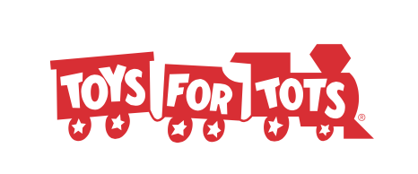 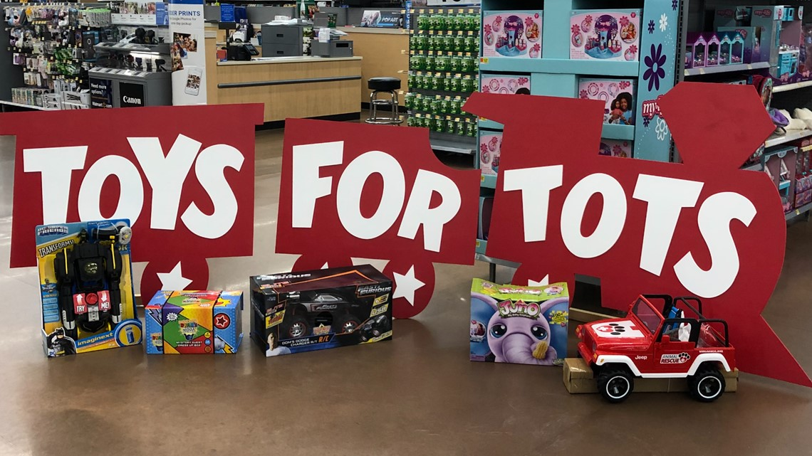
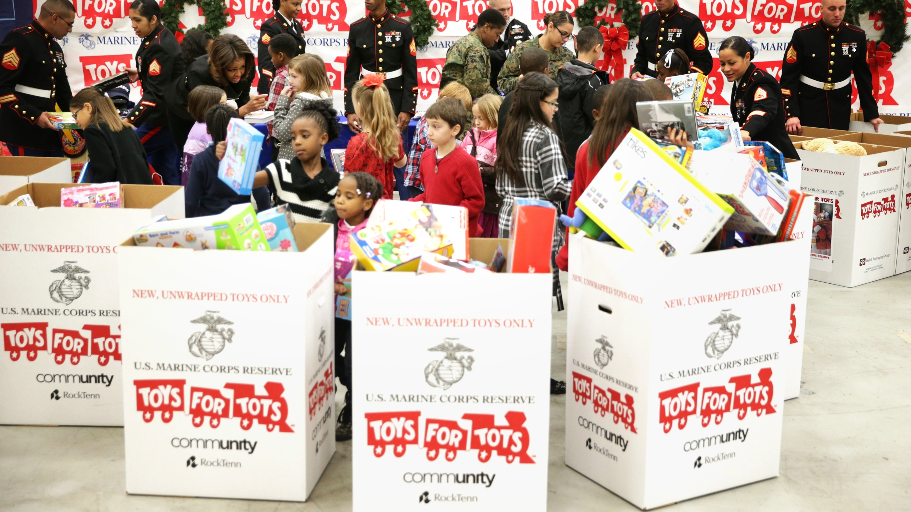
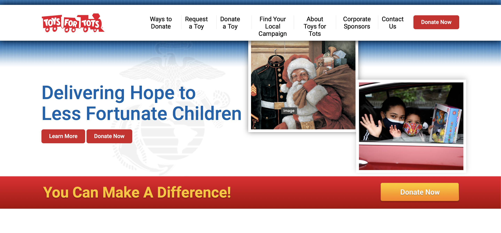
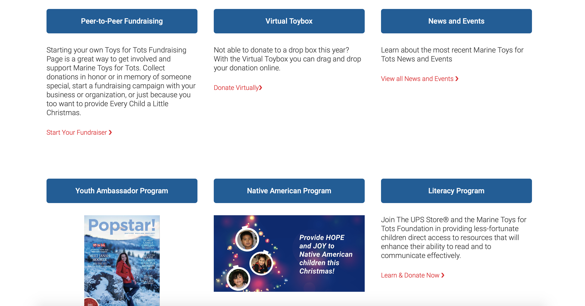
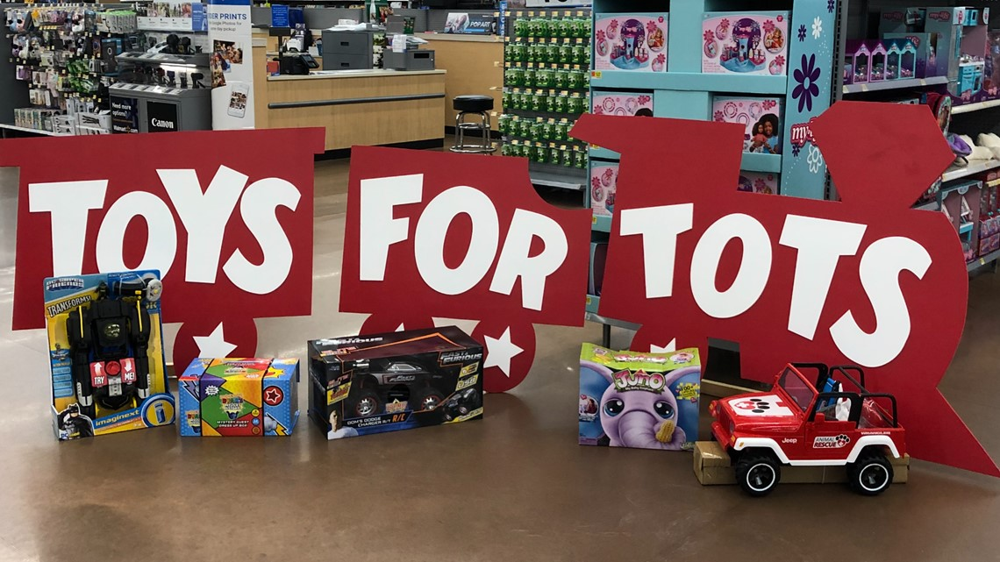
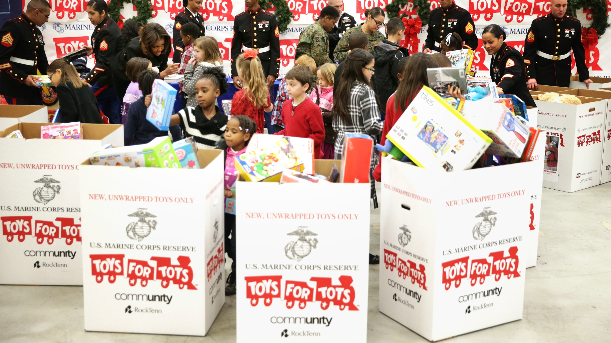
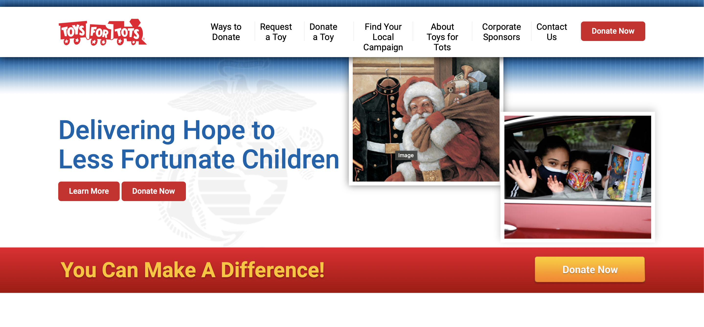
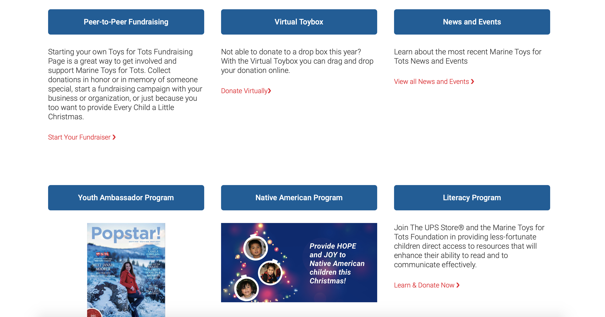
 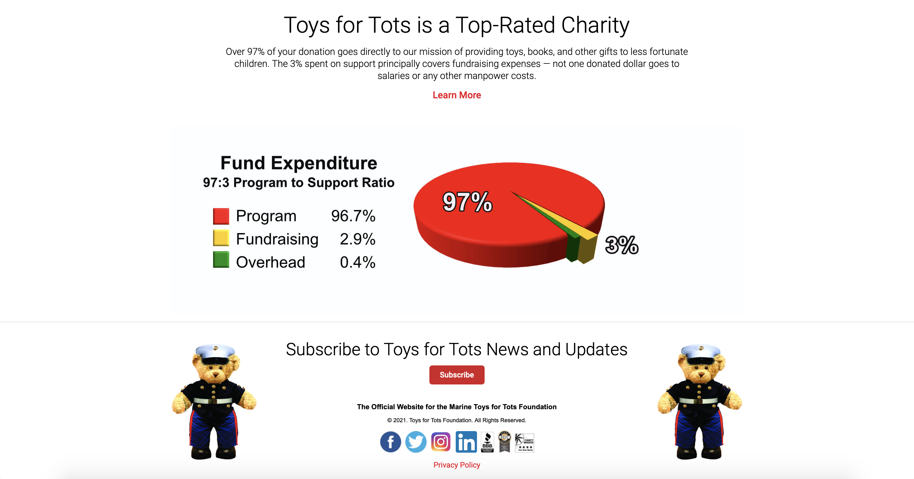
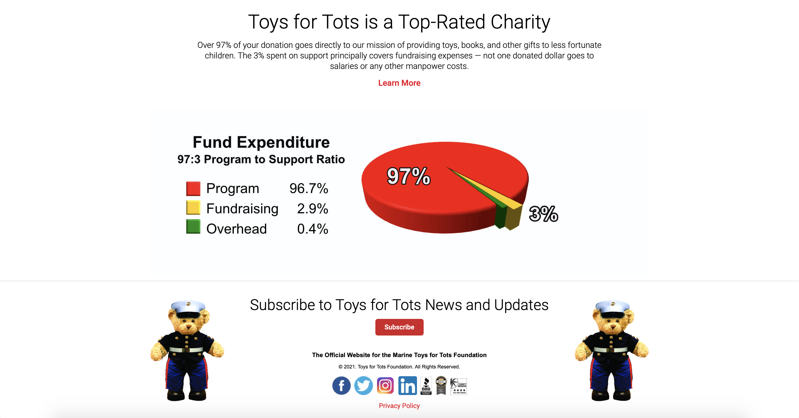

 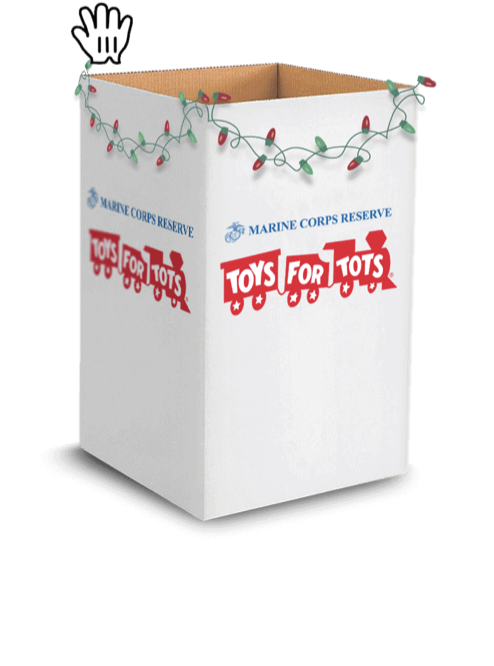
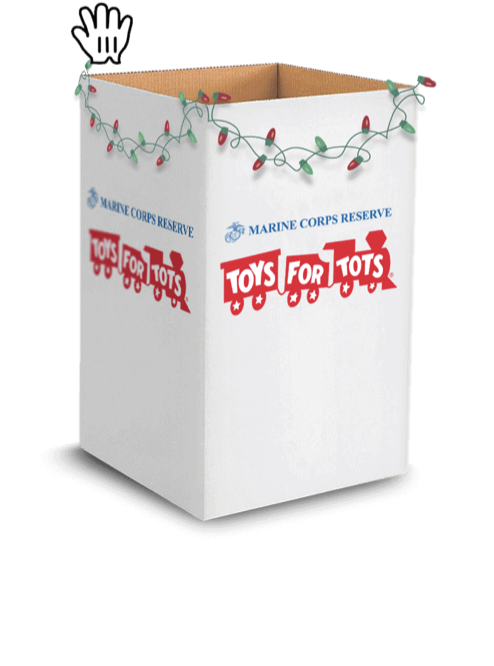
 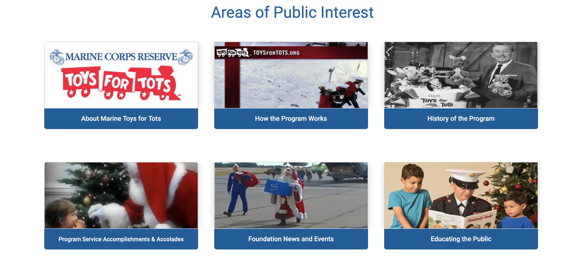
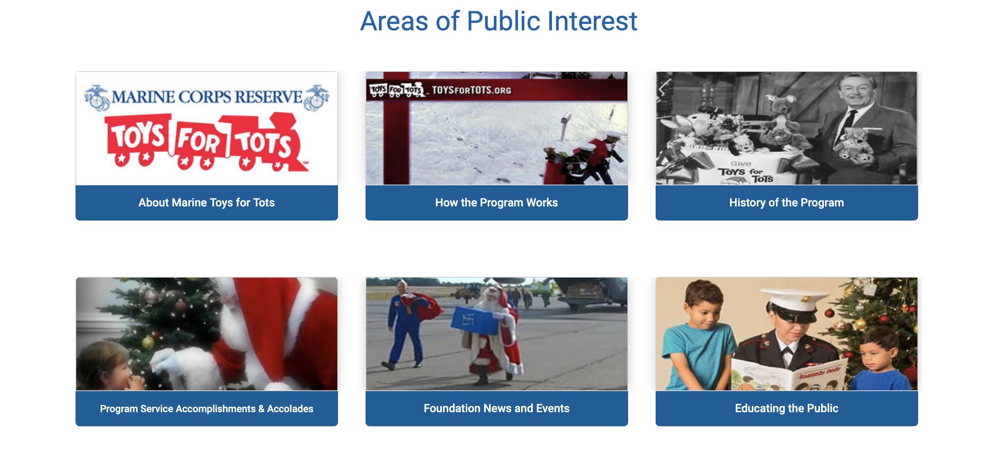